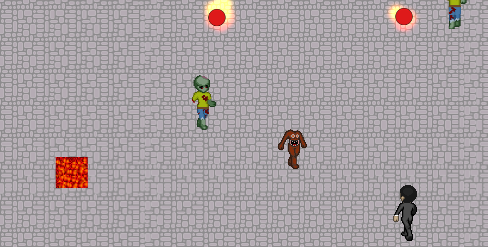

Trials of Purgatory
Team size: 4 people
Platform: PC
Engine: Unity
My role: Programmer
About the project
Trials of Purgatory was my teams group project for a college final. The premise of the game revolves around our hero (who we play as) as he finds himself stuck in Purgatory after a fatal accident. He must take up arms and fight his way out of Purgatory against various monsters. The gameplay is simple and action pact. The game plays as a top-down shooter where the player must move from room to room fighting against various types of demons that are trying to stop you. The level ends with a boss fight against a giant monster. The play is equipped with a semi-automatic handgun and a finite amount of health. If you run out of health, you lose a "coin", and if you lose all three of your starting coins, game over. Since this was a project under a tight time restraint, we only had time to finish one level and one boss.

The technical aspects
My role in the team was basically the lead programmer. I handled the majority of the programming work, including (but not limited to) everything about the player (movement, state machines, camera work, etc), all the enemies and their AI's, the weapon(s) (only one weapon made it into the final release, but I had a working prototype of a shotgun), everything about the weapons (ammo, firing, reloading, etc), the boss, and the various state machines that the game employed.
View This Projects Github